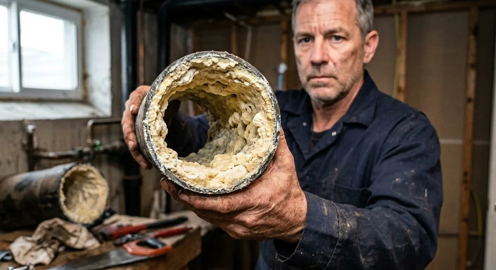
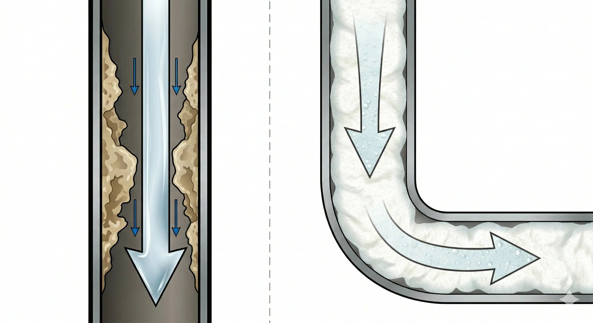
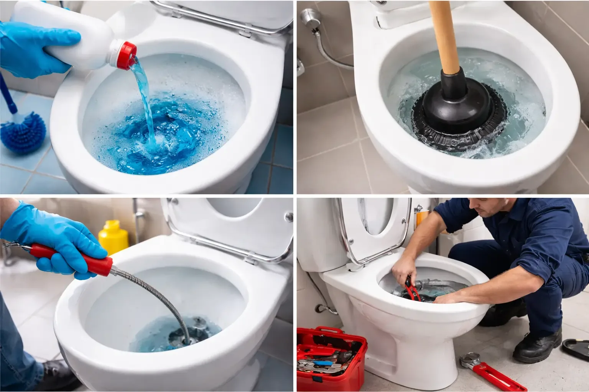
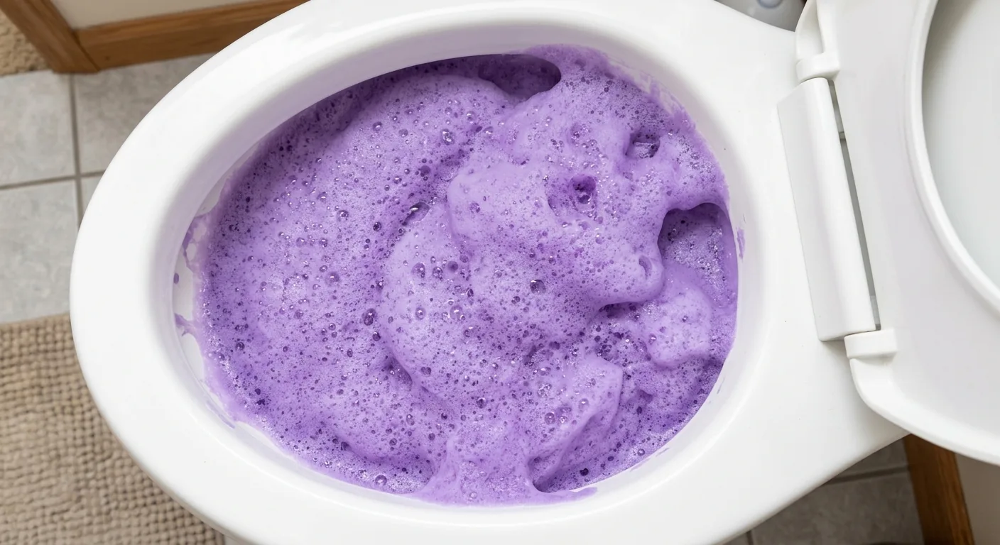
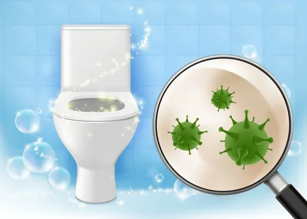
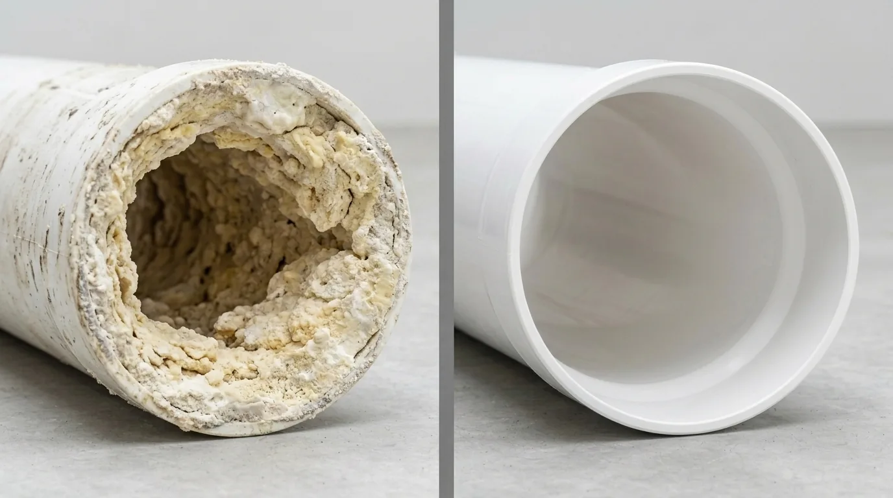

Es war der Geruch, der Markus Weber zuerst stutzig machte. Süßlich, modrig, leicht fäkal — obwohl das Badezimmer in dem Altbau in Hamburg-Eimsbüttel blitzblank aussah. Die Fliesen glänzten, das WC war gerade erst geputzt worden, am Beckenrand klebte ein frischer WC-Stein.
Weber zieht Handschuhe an, sägt ein Stück des Abflussrohrs heraus. Auf der Arbeitsplatte liegt es jetzt: etwa 20 Zentimeter Rohr, innen überzogen mit einer zentimeterdicken, schwarzbraunen Schicht. Glitschig. Lebendig. Wie nasser Teer.
„Das hier“, sagt Weber und hält es in die Kamera, „kam aus einer ganz normalen Familien-Toilette. Vier Personen. Dreizimmerwohnung. Und genau so sieht es in den meisten deutschen Haushalten aus — nur dass es die Leute nicht sehen.“
Markus Weber ist Sanitärmeister in Hamburg, Innungsbetrieb in dritter Generation. 28 Jahre Berufserfahrung. Über 15.000 Toiletten repariert, freigelegt, auseinandergenommen. Und er sagt: „Was die Leute für sauber halten und was tatsächlich in ihren Rohren passiert — das sind zwei komplett verschiedene Welten.“
Die hässliche Wahrheit, die Ihnen Ihr Installateur nie erzählt
Jeder benutzt täglich seine Toilette. Die meisten Menschen putzen sie regelmäßig — Bürste, Chlorreiniger, vielleicht ein WC-Stein unter dem Rand. Und dann denken sie: Erledigt.
Aber was passiert hinter der Keramik, dort wo niemand hinschaut? In den Abflussrohren, die von Ihrer Toilette nach unten in die Kanalisation führen?
Weber beschreibt es so: „Stellen Sie sich Zahnbelag vor. Sie können zehnmal am Tag die Zunge über die Zähne fahren — der Belag bleibt. Nur eine richtige Reinigung löst ihn. Genau das passiert in Ihren Rohren. Nur dass Sie ihn nicht sehen können — und dass niemand ihm jemals mit einer Bürste zu Leibe rückt.“
Biologen nennen es Biofilm. Eine lebende Schicht aus Bakterien, Pilzen, Kalk, Fett und organischen Rückständen. Er beginnt ab Tag eins zu wachsen und nimmt kontinuierlich zu. Jede Spülung drückt Wasser hindurch — aber der Biofilm klammert sich an die Rohrwand wie ein Ring, der sich langsam nach innen schließt. Wissenschaftler sprechen auch von der „Biofilm-Rüstung“, weil sie mit herkömmlichen Methoden praktisch nicht zu entfernen ist.
Und hier liegt das Problem: Alles, was Sie an der Keramik schrubben, hat null Wirkung auf den Biofilm in den Rohren. Die Oberfläche glänzt — die Rohre dahinter verrotten.

„Ich sage meinen Kunden immer: Ihr putzt die Zähne, aber nie die Rachenhöhle. Die Toilette sieht sauber aus, aber die Rohre sind eine Katastrophe.“
— Markus Weber, Sanitärmeister Hamburg
Die 4 Phasen einer Rohrverstopfung — und warum Phase 1 und 2 unsichtbar sind
In 28 Jahren hat Weber ein Muster erkannt. Jede Verstopfung folgt demselben Verlauf — und sie beginnt nicht dann, wenn das Wasser nicht mehr abläuft.
Warum herkömmliche Reiniger das Problem nicht lösen — und es oft schlimmer machen
Weber hat in den Jahren alles gesehen. Und er sagt: Keines der gängigen Produkte löst das eigentliche Problem.

WC-Ente, Domestos & Co.: Sie reinigen die Keramik. Die Flüssigkeit fließt direkt durch das Rohr, ohne nennenswerten Kontakt mit der Rohrwand. Das ist, als würden Sie Wasser durch ein verstopftes Rohr kippen und hoffen, dass sich die Ablagerungen von allein auflösen.
Chemische Rohrreiniger (Drano, Rohrfrei): Aggressive Säuren, die die oberste Schicht des Biofilms angreifen — aber auch das Rohr selbst. Alte Rohre werden porös und brüchig. Weber: „Ich habe Rohre ausgebaut, die von chemischen Rohrreinigern komplett zerfressen waren. Die Verstopfung war weg, aber das Rohr auch.“
Prümpel: Drückt die Verstopfung ein Stück weiter nach unten. Der Biofilm bleibt komplett unangetastet. Die Verstopfung kommt garantiert zurück.
Rohrspirale: Bohrt ein Loch durch die Verstopfung. Wasser fließt wieder — durch ein Loch im Biofilm. Die Rohrwände bleiben komplett verdreckt. Zwei Monate später dasselbe Spiel.
Notdienst-Installateur (150–300 €): Benutzt meist dieselbe Spirale oder Hochdruckreinigung. Das Rohr sieht für ein paar Wochen besser aus — dann wächst der Biofilm nach, weil die Ursache nie beseitigt wurde.
Die Entdeckung, die Markus Weber skeptisch machte — und dann überzeugte
Im Frühjahr 2024 trifft Markus Weber auf der ISH-Sanitärmesse in Frankfurt einen Kollegen aus Rotterdam. Der erzählt ihm von einem Reinigungspulver, das in den Niederlanden seit einigen Jahren in der Sanitärbranche die Runde macht. Ein Pulver, das man in die Toilette gibt, das aufschäumt und den Biofilm in den Rohren von innen auflöst.
Weber ist skeptisch. In 28 Jahren hat er zu viele Produkte gesehen, die alles versprachen und nichts hielten.
Aber der Kollege zeigt ihm ein Video: ein Rohr, innen komplett schwarz. Pulver rein, Wasser dazu, Schaum steigt auf. 30 Minuten später: Das Rohr sieht aus wie neu.
„Ich habe das Video dreimal angeschaut“, sagt Weber. „Dann habe ich sofort eine Packung bestellt.“
Das Produkt heißt FizzClean.
Warum FizzClean wirkt, wo alles andere versagt — in Ihren Rohren
Das grundlegende Problem aller Flüssigreiniger ist Physik. Flüssigkeit fließt nach unten. Sie folgt der Schwerkraft, läuft entlang des tiefsten Punktes des Rohrs und hat kaum Kontakt zu den Seitenwänden oder zur Oberseite. Aber der Biofilm sitzt überall — 360 Grad rundum.
FizzClean arbeitet nach einem anderen Prinzip: Schaum.
Das Pulver wird in die Toilette gegeben und mit warmem Wasser aktiviert. Innerhalb von Sekunden entsteht ein dichter, stabiler Mikro-Schaum, der sich im Rohr ausbreitet — nicht nach unten, sondern in jede Richtung. Der Schaum presst sich gegen die Rohrwände, füllt jeden Hohlraum und umhüllt den Biofilm vollständig.
Dann geht die patentierte Mikro-Schaum-Technologie an die Arbeit:
Schritt 1: Der Schaum umschließt den Biofilm komplett und dringt in seine Struktur ein.
Schritt 2: Natürliche Enzyme im Schaum zerlegen die organischen Bestandteile des Biofilms — Fett, Kalk, Bakterienkolonien, organische Rückstände.
Schritt 3: Eine normale Spülung spült den gelösten Biofilm weg. Die Rohrwände sind sauber — wie am ersten Tag.

„Das erste Mal, als ich FizzClean in ein altes Rohr gegeben habe, konnte ich buchstäblich zusehen, wie der Schaum den Dreck von der Wand hob. Nach 30 Minuten war das Rohr innen grau statt schwarz. Nach der zweiten Anwendung war es sauber.“
— Markus Weber
Was die meisten nicht wissen: Ihre Rohre sind ein Brutplatz für gefährliche Bakterien
Es geht nicht nur um Verstopfungen. Was viele nicht wissen: Die Toilette ist eine der größten Hygienegefahren im Haushalt — und zwar nicht wegen der Keramik.
Wissenschaftler der University of Colorado haben nachgewiesen, dass bei jeder Toilettenspülung ein sogenannter „Toilet Plume“ entsteht. Mikroskopisch kleine Wassertröpfchen werden bis zu 1,80 Meter in die Luft geschleudert. Diese Tröpfchen enthalten Bakterien, Viren und Pilzsporen — und sie stammen nicht nur aus der Schüssel, sondern auch aus dem Biofilm in den Rohren.
Die Partikel landen auf Ihrem Handtuch. Auf Ihrer Zahnbürste. Auf dem Boden. Auf jeder Oberfläche im Badezimmer.
Solange der Biofilm in den Rohren existiert, ist jede Spülung eine Bakteriendusche für Ihr Bad. FizzClean beseitigt die Ursache — nicht die Symptome.

Was Anwender nach der ersten Anwendung sagen
„Bei uns lief die Toilette seit bestimmt einem halben Jahr nur noch im Schneckentempo ab. Das Gluckern nachts hat mich wahnsinnig gemacht. Ich hatte schon einen Kostenvoranschlag vom Installateur: 240 Euro für eine Grundreinigung. Dann habe ich FizzClean probiert — ehrlich gesagt als letzten Versuch. Pulver rein, Schaum hoch, 30 Minuten warten, spülen. Das Wasser schoss durch wie neu. 240 Euro gespart, und das für 15 Euro. Unglaublich.“
„Ich bin 74 und lebe allein. Zweimal im Jahr musste der Installateur kommen — jedes Mal 180 Euro. Mein Enkel hat mir FizzClean zu Weihnachten geschenkt. Ich dachte, was soll das denn sein. Aber ich habe es probiert. Das war vor acht Monaten. Seitdem: kein Installateur, kein Problem, keine Kosten. Mein Enkel bekommt dieses Jahr eine extra große Portion Sonntagsbraten.“
„Ich habe alles probiert. Rohrfrei, Prümpel, sogar die Rohrspirale aus dem Baumarkt. Nichts hat langfristig geholfen. Bei FizzClean war ich skeptisch — wieder so ein Wunderprodukt. Aber dann habe ich gesehen, wie der Schaum hochsteigt, wie er arbeitet. Man sieht den Dreck buchstäblich verschwinden. Und das Beste: Das Problem kommt nicht wieder. Vier Monate schon, alles frei.“
„Wir haben eine 2-jährige Tochter, die gerade das Bad für sich entdeckt. Alles wird angefasst, angeleckt, erkundet. Als ich gelesen habe, was bei jeder Spülung an Bakterien durchs Bad fliesßt, war mir schlecht. Seitdem benutze ich FizzClean alle zwei Wochen. Kein aggressiver Chemiegestank, kein Handschuh-Risiko, einfach rein und fertig. Für mich das beste Hygiene-Upgrade für ein Familienbad.“
„Es war ein Samstag, 22 Uhr, wir hatten Gläser in der Hand und die Toilette ging nicht mehr. Notdienst: 280 Euro. Für 20 Minuten Arbeit. Am Montag hat mein Sohn FizzClean bestellt und gesagt: Mama, einmal im Monat reinkippen, dann hast du Ruhe. Sieben Monate her — kein einziges Problem mehr. Die 280 Euro waren meine teuerste und gleichzeitig letzte Notdienst-Rechnung.“

FizzClean wirkt überall, wo Rohre verstopfen können
Was als Toilettenreiniger begann, wirkt überall dort, wo Rohre verstopfen und Biofilm wächst:
Toilette: Biofilm, Verstopfungen, Gerüche — die Haupteinsatzmöglichkeit.
Waschbecken: Haare, Seifenreste, Zahnpasta-Ablagerungen in den Rohren.
Dusche/Badewanne: Haare, Shampoo-Rückstände, Kalkablagerungen im Abfluss.
Spülbecken: Fett, Essensreste, Ölablagerungen im Abfluss.
Waschmaschine: Flusen, Waschmittelreste im Ablaufschlauch.
Ein Produkt für jeden Abfluss im Haus. Statt fünf verschiedener Spezialreiniger, die alle nur an der Oberfläche wirken.
Wo gibt es das Original? (Vorsicht vor Fälschungen)
FizzClean ist ausschließlich über den offiziellen Webshop des Herstellers erhältlich. Nicht auf Amazon. Nicht auf eBay. Nicht bei dm oder Rossmann.
Weber warnt ausdrücklich: „Auf Amazon und eBay tauchen mittlerweile Fälschungen auf, die ähnlich aussehen, aber komplett andere Inhaltsstoffe haben. Die schäumen zwar, bewirken aber nichts am Biofilm. Im schlimmsten Fall beschädigen sie die Rohre.“
Warum nicht im Einzelhandel? Weil dm und Rossmann als Zwischenhändler den Preis verdoppeln müssten. Über den Direktverkauf ab Werk kann der Hersteller den besten Preis anbieten — inklusive frischer Produktion, Käuferschutz und Geld-zurück-Garantie.
AKTUELL: Bis zu 70% Rabatt — nur solange der Vorrat reicht
Im Rahmen der Sommeraktion bietet der Hersteller FizzClean derzeit mit bis zu 70% Rabatt an. Die Lagerkapazität ist begrenzt — wenn die aktuelle Charge ausverkauft ist, dauert die Nachproduktion üblicherweise vier bis sechs Wochen.
Prüfen Sie jetzt, ob FizzClean noch für Ihre Region verfügbar ist: